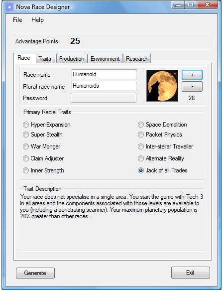
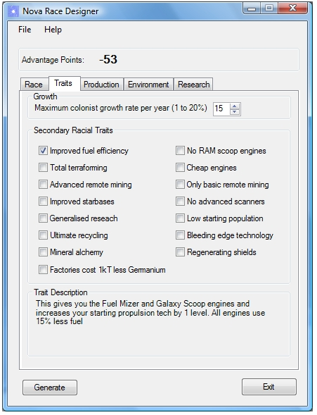
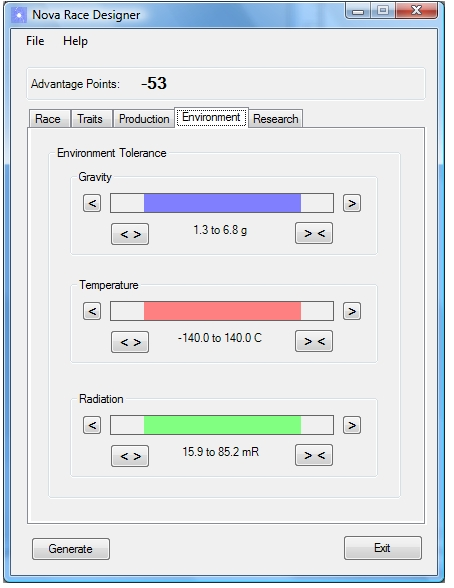

The Race Designer is identical in function to the race wizard in
Stars! The only major differences are that it is implemented as a separate
program (not as part of the main program) and it uses the standard Windows controls.
Otherwise, anyone familiar with the Stars! equivalent will have no trouble
using it. Here's an example screen shot of the primary racial traits selection screen.

And here is another familiar Stars! set of options:

And another:
